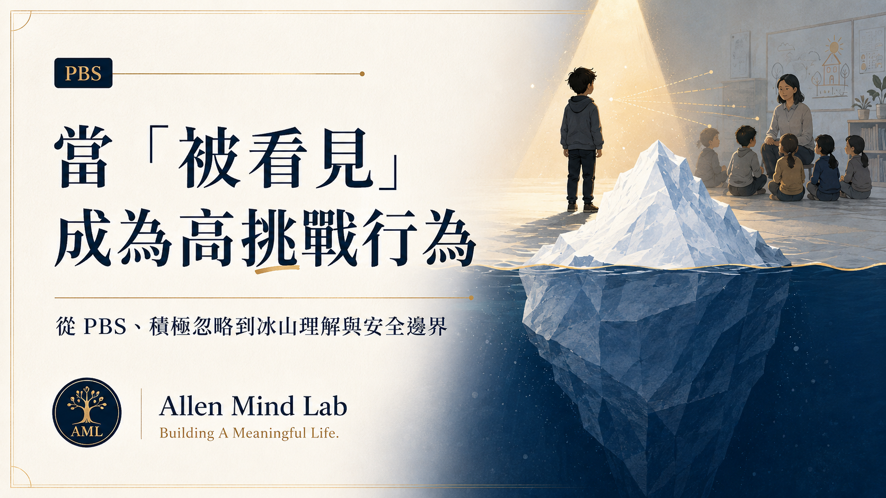

先理解，再改變
辨識行為功能、前因與後果，不急著用標籤解釋一個人。
在 Allen Mind Lab，行為不是只需要被制止的問題。真正重要的是理解：它在什麼情境發生、完成了什麼功能，以及我們能否用更安全、更可行的方式支持同樣的需要。
PBS 的核心不只是降低問題行為，而是透過功能理解、事前預防、技能教學與環境調整，增加一個人可以成功參與生活的可能性。
辨識行為功能、前因與後果，不急著用標籤解釋一個人。
調整需求、環境、節奏與可預期性，往往比事後制止更有效。
不只拿掉不安全的行為，也要建立更有效的表達與參與方式。

從事前預防、積極忽略與替代行為，到冰山下的需要與班級安全邊界，重新理解「被看見」背後的行為與關係。
AML 在 PBS × 管理實務中，持續用 SAFE 提醒現場：安全、調頻、彈性與持續評估需要同時存在。
辨識立即風險，以及需要停止、換手或求援的時點。
讀懂當事人與現場狀態，保留調整需求、節奏與支持方式的彈性。
觀察策略是否有效，避免把一次成功變成不經檢驗的固定做法。
從功能理解開始，走向預防、替代技能、環境支持與團隊系統。
Explore Articles →